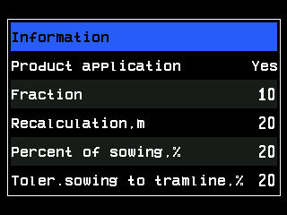

Capteurs de graines et d'engrais
Les réglages des capteurs de graines et des capteurs d'engrais du Hectare Mini — fraction selon la culture, correction, limites d'erreur, longueur de recalcul, pourcentage de semis — et le moment où le boîtier commence à surveiller le semis.
Les capteurs de graines partagent un seul jeu de réglages : modifiez-le sur n'importe quel capteur de graines et il s'applique à tous. Les capteurs d'engrais partagent un second jeu. Seule « Product application » (application du produit) se règle ligne par ligne. Ouvrez le menu contextuel de n'importe quel capteur du groupe comme dans Réglages des capteurs.

| Paramètre | Niveau | Fonction | Plage · valeur par défaut |
|---|---|---|---|
| « Product application » | Agronomist | « Yes » (oui) : cette ligne sème et est surveillée. « No » (non) : la ligne est traitée comme coupée, comme une ligne dans un passage de jalonnage — la semence qui la traverse déclenche « Seeding to tramline ». Non affichée quand chaque ligne du groupe a son propre moteur. | « No » / « Yes » |
| « Sensitivity » | Agronomist | Sensibilité d'un capteur de graines d'une génération plus ancienne. Affichée uniquement quand un tel capteur est raccordé. | 1 … 120 · 80 |
| « Fraction » | Operator | Le filtre de comptage des capteurs, réglé selon la taille des graines — un filtre contre la poussière et les menues pailles. Modifiez-la avec la culture — tableau ci-dessous. | 1 … 100 · 10 |
| « Correction » | Operator | Adapte la sensibilité au support du capteur. Une valeur plus élevée abaisse la sensibilité et tient la poussière et les fines impuretés hors du comptage. Affichée uniquement pour la génération de capteur qui l'utilise. | 100 … 3300 · 300 |
| « Rate error,% » | Agronomist | Écart admis entre la dose mesurée et la consigne ; au-delà, « Under allowable rate » ou « Over allowable rate ». Uniquement en modes « Hybrid » et « Precise ». | 5 … 95 % · 50 % |
| « Doubles error,% » | Agronomist | Au-dessus de cette proportion de doubles : « High % of doubles ». « No » désactive l'alarme. Uniquement en mode « Precise ». | « No », 1 … 95 % · « No » |
| « Skips error,% » | Agronomist | Au-dessus de cette proportion de manques : « High % of skips ». « No » désactive l'alarme. Uniquement en mode « Precise ». | « No », 1 … 95 % · « No » |
| « Recalculation,m » | Operator | Le tronçon sur lequel les manques, les doubles et la qualité sont recueillis pour le schéma et le tableau de semis. Sans capteur de vitesse, c'est « Recalculation,sec », en secondes. « MENU » dessus laisse le boîtier le calculer — Laisser le boîtier calculer la longueur de recalcul. | 10 … 50 · 20 |
| « Percent of sowing,% » | Agronomist | La proportion de lignes de semis dont le boîtier a besoin avant de commencer à surveiller le semis — ci-dessous. Capteurs de graines uniquement ; non affichée sur les machines à moteurs de doseur. | 5 … 80 %, par pas de 5 · 20 % |
| « Toler.sowing to tramline,% » | Agronomist | Quelle quantité de semence peut encore traverser une ligne coupée pour un jalonnage, en pour cent de la dose de consigne, avant « Seeding to tramline ». | 0 … 50 % · 20 % |
| « Group start address » | Service (graines), Agronomist (engrais) | Le point de départ de la numérotation de ce groupe dans le réseau de capteurs. Laissez « AUTO » sauf indication contraire du service après-vente. | « AUTO », … |
En mode « Flow », une ligne n'est en alarme que si elle reste sous le seuil d'alarme ; il n'y a pas de limite supérieure. Les doses de consigne et les seuils d'alarme se règlent eux-mêmes sur l'écran d'accueil — Modifier la dose de consigne.
Fraction selon la culture
Guidez-vous sur la taille de la semence :
| Culture | « Fraction » |
|---|---|
| Colza | 1 – 5 |
| Blé | 5 – 10 |
| Maïs | 10 – 30 |
| Tournesol | 10 – 30 |
Sur les semoirs pneumatiques, réglez 1 quelle que soit la culture. Une fraction trop élevée fait disparaître les petites graines du comptage — le boîtier indique alors une dose trop faible.
Quand le boîtier surveille le semis
Le boîtier ne commence à surveiller le semis — et à déclencher les alarmes de semis — que lorsque la semence s'écoule dans la dose de consigne par au moins « Percent of sowing,% » des lignes de semis et, si « Seeding criteria » du capteur de vitesse est sur « Yes », que la machine avance (Capteur de vitesse d'avancement). Jusque-là, le schéma affiche « NOT UNDER CONTROL » — voir Alarmes de semis. Avec un capteur de position de travail dont « Alarms criteria » est sur « Yes », rien n'est surveillé en position de transport (Capteurs de trémie et de position de travail).
L'écran d'état
Affiche Status: avec l'état du capteur — « Working », « Clogged », « Light struck » et les autres : L'écran d'état d'un capteur.
Votre machine fait quelque chose que cette page n'explique pas ? Écrivez à support@agriwelt.com — un ingénieur vous répond.